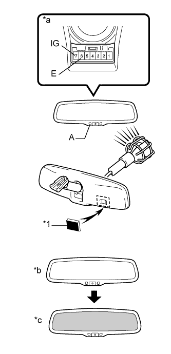

ВНУТРЕННЕЕ ЗЕРКАЛО ЗАДНЕГО ВИДА > ПРОВЕРКА |
| 1. ПРОВЕРЬТЕ ВНУТРЕННЕЕ ЗЕРКАЛО ЗАДНЕГО ВИДА В СБОРЕ (для моделей с зеркалом с электрохромным покрытием) |
|  |
Проверьте работу зеркала с электрохромным покрытием.
| *1 | Черная лента |
| *a | Устройство с отсоединенным жгутом проводов (внутреннее зеркало заднего вида в сборе) |
| *b | Ярко |
| *c | Темно |
Подсоедините положительный (+) вывод аккумуляторной батареи к контакту 7, а отрицательный (-) вывод – к контакту 6.
Убедитесь, что светодиод, обозначенный на рисунке как А, горит.
Наклейте черную ленту на передний датчик во избежание его срабатывания от света.
Осветите зеркало электрической лампой. Убедитесь, что поверхность зеркала темнеет.